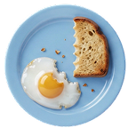
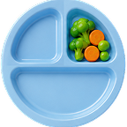
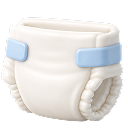
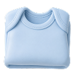
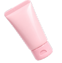
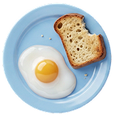

جميع الفصولالزرافةالبطريقالأرنبالأحمر
لين خالدالاثنين، 16 فبراير 2026
كنتُ اليوم سعيدةالمزاج

تناولتُ معظمهاالإفطار

تناولتُ القليلالغداء
تناولتُ الدواءالدواء
نحتاج إلى

حفاضات
ملابسمناديل مبللة

كريمحليب أطفال
ترجمة
لين خالدالأحد، 15 فبراير 2026
كنتُ اليوم مستقرةالمزاج

تناولتُ الكلالإفطار